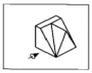
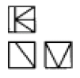
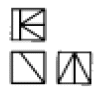
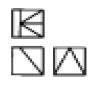
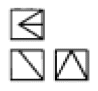

건설기계정비기능사 (2005-04-03 기출문제)
1과목: 건설기계정비(임의구분)
1. 등화장치에서 어떤 방향에서의 빛의 세기를 나타내는 것을 무엇이라 하는가?
- 조도
- 럭스(lux)
- 데시벨(dB)
- 칸데라(cd)
(정답률: 60%)

2. 다음 중 작동시 플라이휠의 링기어와 관련이 있는 부품은?
- 발전기
- 배전기
- 기동전동기
- 연료펌프
(정답률: 81%)
3. 프라이밍 펌프(Priming pump)의 작용 및 작동원리가 아닌것은?
- 연료 공급 펌프의 소음 작용을 방지한다.
- 연료 장치내 공기빼기 작용을 할때 사용한다.
- 손으로 작동시키며, 연료 공급 펌프에 설치한다.
- 정지상태에서 연료를 분사 펌프까지 보낸다.
(정답률: 56%)
4. 축전지, 점화코일, 점화플러그 등을 합하여 무슨 장치라 하는가?
- 배전 장치
- 발전 장치
- 점화 장치
- 축전 장치
(정답률: 92%)
5. 공기실식 디젤기관의 공기실 체적은 전압축 체적의 약 몇% 인가?
- 6.5∼20%
- 20∼50%
- 30∼70%
- 40∼90%
(정답률: 41%)
6. 최근에 많이 사용되는 건설기계 기관의 기동모터는?
- 직류 직권식
- 교류 분권식
- 교류 복권식
- 직류 차동 복권식
(정답률: 56%)
7. AC 발전기의 출력은 무엇을 변화시켜 조정하는가?
- 로터전류
- 스테이터전류
- 회전속도
- 다이오드의 용량
(정답률: 43%)
8. 120AH 축전지가 매일 3%의 자기방전을 한다. 이것을 보존하기 위하여 미전류 충전기로 충전할 때 충전전류는 몇 A로 조정하여 두면 되는가?
- 0.⑤A
- 0.1A
- 0.15A
- 0.20A
(정답률: 47%)
9. 행정체적 1000cc, 제동마력 55ps, 회전수 4500rpm의 4행정 사이클 기관에서 기계효율이 85%일 때 제동평균 유효압력 (kgf/cm2)은 얼마인가?
- 13
- 12
- 11
- 10
(정답률: 23%)
10. 실린더헤드를 연삭하면 압축비가 어떻게 변하는가?
- 커진다.
- 작아진다.
- 변하지 않는다.
- 엔진에 따라 작아지는 것도 있고 커지는 것도 있다.
(정답률: 67%)
11. 기관의 기계효율을 좋게하기 위해 저항을 줄이는 방법이다. 틀린 것은?
- 베어링의 면적이 적당한 베어링을 채택한다.
- 볼 또는 로울러 베어링을 사용한다.
- 마찰계수가 큰 금속을 사용한다.
- 완전한 윤활을 기한다.
(정답률: 86%)
12. 디젤엔진에서 연료의 분무형성 요건이 아닌 것은?
- 관통도
- 혼합도
- 분포
- 무화
(정답률: 62%)
13. 디젤기관의 장점에 해당되는 것은 어느 것인가?
- 마력당 무게가 가볍다.
- 저속이나 공전시에 진동이 적다.
- 연료 소모량이 적다.
- 압축비가 작다.
(정답률: 59%)
14. 기관의 밸브간격이 너무 좁을 때 일어나는 현상 중 틀린것은?
- 압축가스가 새서 동력이 감소된다.
- 실화를 일으킨다.
- 적게 열리고 정확히 닫힌다.
- 역화(Back fire)가 일어나기 쉽다.
(정답률: 53%)
15. 연료 분사관을 보관할 때 주의할 점은?
- 분사관 입구 양쪽에 나무 또는 고무 마개를 한다.
- 분사관을 경유속에 담구어 둔다.
- 분사관내 방청유를 채우고 나무 또는 고무 마개를 한다.
- 분사관을 석유속에 담구어 둔다.
(정답률: 59%)
16. 캠축의 캠 점검에 대한 설명이다. 옳은 것은?
- 캠의 높이(lift)가 심하게 마멸되면 연마하여 수정한다.
- 캠이 마멸하면 그만큼 밸브 틈새가 커진다.
- 캠이 한계값 이상 마멸되면 교환하여야 한다.
- 캠의 단붙임(RIDDGE) 마멸은 중목의 줄로서 수정한다
(정답률: 69%)
17. 다음 중 압접에 해당하는 용접방식은?
- 스터드 용접
- 전자빔 용접
- 테르밋 용접
- 초음파 용접
(정답률: 39%)
18. 탄소강의 담금질 조직 중 강도와 경도가 가장 높은 것은?
- 펄라이트
- 소르바이트
- 트루스타이트
- 마텐자이트
(정답률: 44%)
19. 나사에서 서로 인접한 나사산의 서로 대응하는 2점을 축선에 평행하게 측정한 거리는 ?
- 리드(lead)
- 피치(pitch)
- 플랭크(flank)
- 나사홈(thread groove)
(정답률: 50%)
20. 탄소강에서 탄소함유량이 증가함에 따라 감소하는 성질은?
- 경도
- 연신율
- 인장강도
- 비열
(정답률: 39%)
2과목: 일반기계공학(임의구분)
21. 피치원 지름이 100, 잇수가 20일 때 모듈은?
- 2
- 3
- 4
- 5
(정답률: 83%)
22. 제도에서 축척을 1/2로 하면 면적은 얼마로 되는가 ?
- 1/8배
- 1/4배
- 1/2배
- 2배
(정답률: 52%)
23. 일반적으로 파이프를 연결하는데 사용하는 나사는 ?
- 유니파이 나사
- 미터 나사
- 관용 나사
- 볼 나사
(정답률: 37%)
24. 불변강(invariable steel)이 아닌 것은 ?
- 슈퍼 인바
- 인바
- 스텔라이트
- 엘린바
(정답률: 44%)
25. 다음 중 정밀입자가공에 해당하지 않는 것은?
- 래핑
- 호닝
- 슈퍼 피니싱
- 드릴링
(정답률: 62%)
26. 드릴로 구멍을 뚫은 내경 부분에 암나사를 가공하는 공구 작업은?
- 다이스작업
- 탭작업
- 리머작업
- 바이트작업
(정답률: 64%)
27. 도면에 치수를 기입하는 경우에 유의할 사항이다. 내용이 적합하지 않은 것은?
- 대상물의 기능, 제작, 조립 등을 고려하여 필요하다고 생각되는 치수를 명료하게 기입한다.
- 치수는 대상물의 크기, 자세 및 위치를 가장 명확하게 표시하는 데 필요하고도 충분한 것을 기입한다.
- 치수는 되도록 정면도, 평면도, 우측면도 등의 기본 3면도에 분산하여 보기 좋도록 기입한다.
- 치수는 되도록 계산하여 구할 필요가 없도록 기입한다.
(정답률: 34%)
28. 연삭숫돌의 입자 표면이나 기공에 칩(chip)이 차있는 상태의 결함은?
- 무딤
- 눈메움
- 트루잉
- 입자탈락
(정답률: 31%)
29. 다음 피복아크 용접봉 표시기호 중 고산화티탄계 용접봉에 해당되는 것은?
- E4301
- E4303
- E4311
- E4313
(정답률: 50%)
30. 다음 등각 투상도에서 화살표 방향을 정면도로 하여 제3각법으로 제도한 것 중 맞는 것은?





(정답률: 60%)
31. 다음중 교류아크 용접기의 종류가 아닌 것은?
- 정류기형
- 가동철심형
- 가동코일형
- 탭전환형
(정답률: 33%)
32. 전기용접 작업에 대한 안전사항 중 옳지 않은 것은?
- 어스선은 큰 것을 사용하고 접촉이 잘되게 붙인다.
- 용접봉 코드는 되도록 짧게 하여야 하며 여기에 맞게 용접기를 놓는다.
- 코드의 피복이 찢어졌으면 곧 수리하며 접속부분은 절연물을 감는다.
- 차광 안경을 사용하지 않고 작업한다.
(정답률: 83%)
33. 감전사고 방지책과 관계가 먼 것은?
- 고압의 전류가 흐르는 부분은 표시하여 주의를 준다.
- 전기작업을 할 때는 절연용 보호구를 착용한다.
- 정전시에는 제일 먼저 퓨즈를 검사한다.
- 스위치의 개폐는 오른손으로 하고 물기가 있는 손으로 전기장치나 기구에 손을 대지 않는다.
(정답률: 68%)
34. 기계작업에 대한 설명 중 적당하지 않는 것은?
- 치수측정은 기계 회전중에 하지 않는다.
- 구멍깍기 작업시에는 기계운전 중에도 구멍속을 청소해야 한다.
- 기계의 회전 중에는 다듬면 검사를 하지 않는다.
- 베드 및 테이블(BED ＆ TABLE)의 면을 공구대 대용으로 쓰지 않는다.
(정답률: 85%)
35. 화재를 분류하는 표시는 A.B.C.D 급으로 분류한다. 유류 화재는?
- A급
- B급
- C급
- D급
(정답률: 88%)
36. 실내 작업장에서 정밀작업의 표준(KS기준) 조명은?
- 1500 룩스 이상
- 1000 룩스 이상
- 600 룩스 이상
- 300 룩스 이상
(정답률: 45%)
37. 기중기 작업 중 주의할 점이 아닌 것은?
- 달아올릴 화물의 무게를 파악하여 제한하중 이하에서 작업한다.
- 매달린 화물이 불안전하다고 생각될 때는 작업을 중지한다.
- 신호의 규정은 없고 작업은 적당히 한다.
- 항상 신호인의 신호에 따라 작업한다.
(정답률: 90%)
38. 연삭작업시 지켜야 할 안전수칙 중 잘못된 것은?
- 보안경을 반드시 착용한다.
- 숫돌의 측면을 사용한다.
- 숫돌차와 연삭대 간격은 3mm 이하로 한다.
- 정상 회전속도에서 연삭을 시작한다.
(정답률: 56%)
39. 다음 설명 중 잘못된 것은?
- 부동액은 차체의 도색 부분을 손상시킬 수 있다.
- 전해액은 차체를 부식시킨다.
- 냉각수는 경수를 사용하는 것이 좋다.
- 자동변속기 오일은 제작회사의 추천 오일을 사용한다.
(정답률: 66%)
40. 다음 중 보안경을 반드시 착용하여야 하는 작업은?
- 기관 탈착 작업
- 납땜 작업
- 변속기 탈착 작업
- 전기배선 작업
(정답률: 47%)
3과목: 안전관리(임의구분)
41. 다음은 정(chisel)을 사용할 때의 주의사항들이다. 안전에 어긋나는 점은?
- 정 머리가 찌그러진 것은 수정해서 사용한다.
- 쪼아내기(chipping)작업때는 방진안경을 착용한다.
- 정의 공구날은 중심부에 닿게 사용한다.
- 까낸 자리를 손으로 더듬어 가며 정확히 작업한다.
(정답률: 65%)
42. 플런저 펌프에서 펌프의 토출량을 제어하는 방법이 아닌것은?
- 유량제어
- 마력제어
- 압력제어
- 회전수제어
(정답률: 46%)
43. 변속할 때 기어의 물림 소리가 심하게 나는 원인은?
- 윤활유의 부족
- 기어 사이의 백래시 과다
- 클러치가 끊어지지 않을 때
- 시프트 포크와 시프트 레일과의 관계 불량
(정답률: 42%)
44. 유체 클러치의 와류를 감소 시키는 것은?
- 임펠러
- 스테이터
- 가이드 링
- 터빈
(정답률: 59%)
45. 아스팔트믹싱 플랜트의 운전전에 점검해야 할 것이 아닌것은?
- 아스팔트 혼합재 온도
- 체인 및 벨트 긴장도
- 급유상태
- 각 부분의 볼트 이완상태
(정답률: 55%)
46. 다음 중 기중기의 전부장치가 아닌 것은?
- 드래그 라인
- 파일 드라이버
- 크람 셀
- 스캐리파이어
(정답률: 49%)
47. 무한궤도(크롤러)형 굴삭기의 주행감속장치에 고장이 발생하여 탈거하고자 한다. 작업내용으로 맞지 않는 것은?
- 트랙을 분리한다.
- 장비를 단단하고 평탄한 지면위에 정차시킨다.
- 스프로킷과 근접한 하부 롤러를 탈거한다.
- 주행모터를 함께 탈거한다.
(정답률: 24%)
48. 크로울러식 불도저에서 레버를 당겨도 환향이 잘 안되는 원인이 아닌 것은?
- 유압 부스터용 오일 펌프의 흡입구가 막혔다.
- 유압 부스터용 작동유에 공기가 들어있다.
- 링케이지의 조정불량
- 베벨 및 피니언 기어의 파손
(정답률: 35%)
49. 트럭식 기중기의 제동 장치에서 공기 압력을 기계적 일로 바꾸는 역할을 하는 것은 어느 것인가?
- 브레이크 쳄버
- 퀵 릴리스 밸브
- 메이크업 밸브
- 릴레이 밸브
(정답률: 63%)
50. 덤프트럭의 토인은 무엇으로 조정하는가?
- 타이어 공기압력
- 현가 스프링
- 타이로드 엔드
- 조향 핸들
(정답률: 78%)
51. 유압 오일내에 거품이 형성되는 가장 큰 이유는?
- 오일의 누설
- 오일속의 수분혼입
- 오일의 열화
- 오일속의 공기혼입
(정답률: 71%)
52. 트랙 아이들러에는 무슨 베어링을 사용하는가?
- 테이퍼 롤러 베어링
- 니이들 베어링
- 볼 베어링
- 부싱
(정답률: 55%)
53. 불도저의 스프로켓에 대한 설명이다. 이 중 옳지 않는 것은?
- 이빨의 취부상태에 따라 일체형과 분할형이 있다.
- 경제적인 면에서 분할형이 유리하다.
- 정밀 연마되었으며 열처리 되어있다.
- 이빨수는 대부분 짝수개로 되어있다.
(정답률: 63%)
54. 트랙 로울러는 흙탕물, 진창, 토사에 묻혀서 회전한다. 따라서 윤활제의 누설을 방지하고 흙물의 침입을 막기 위하여 사용하는 시일은?
- 파킹 시일
- 플로우팅 시일
- 0 시일
- 로우 시일
(정답률: 56%)
55. 유압실린더 피스톤에 사용되는 피스톤링 절삭각의 모양 중 압축시 누유가 가장 적은 것은?
(정답률: 72%)
56. 유압 회로내에서 공동 현상이 생길때 그 처치 방법은?
- 유압유의 압력을 높인다.
- 압력 변화를 없앤다.
- 유압유의 온도를 높인다.
- 과포화 상태로 만든다.
(정답률: 60%)
57. 모든 유압장치가 처음부터 작동이 불량할 때 정비하여야 할 곳이 아닌 것은?
- 유압 펌프
- 메인 릴리프 밸브
- 오일 냉각기
- 전류식 여과기
(정답률: 60%)
58. 길이 400mm의 렌치로 5.6kgf-m의 나사를 조이려면 몇 kgf의 힘이 필요한가?
- 14 kgf
- 28 kgf
- 42 kgf
- 56 kgf
(정답률: 39%)
59. 다음 중 지게차의 마스트 장치에서 마스트를 작용시키는 유압 실린더의 유압은 보통 얼마로 유지해야 하는가?
- 20∼60kgf/cm2
- 230∼350kgf/cm2
- 70∼210kgf/cm2
- 350∼600kgf/cm2
(정답률: 46%)
60. 유압회로에서 첵크 밸브의 설명 중 맞지 않는 것은?
- 압력 유지용
- 실린더의 낙하방지
- 위치 유지용
- 유량 제어용
(정답률: 35%)